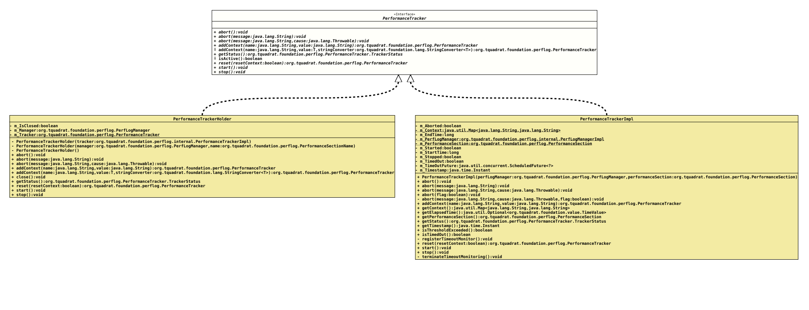

Interface PerformanceTracker
- All Known Implementing Classes:
PerfLogUtils.Holder, PerformanceTrackerImpl
This interface describes a performance tracker for the Foundation Performance Logging and Monitoring.
This is basically collecting the time that is spent within a performance section.
Obviously, an instance of the implementation of this interface is not thread-safe, but it can be reused multiple times.
- Author:
- Thomas Thrien (thomas.thrien@tquadrat.org)
- Version:
- $Id: PerformanceTracker.java 1211 2026-05-01 15:24:10Z tquadrat $
- Since:
- 0.25.0
- UML Diagram
-

UML Diagram for "org.tquadrat.foundation.perflog.PerformanceTracker"
{kind=link}
-
Nested Class Summary
Nested Classes -
Method Summary
Modifier and TypeMethodDescriptionvoidabort()Stops the performance timer.voidStops the performance timer and takes a message describing the reason for the abort.voidStops the performance timer and takes a message describing the reason for the abort, plus the exception that caused it.addContext(String name, String value) Adds context information to this tracker.addContext(String name, T value, StringConverter<T> stringConverter) Adds context information to this tracker.Returns the status of this tracker instance.default booleanisActive()Checks whether the tracker is active.reset(boolean resetContext) Resets the instance.voidstart()Resets the instance and starts the performance timer.voidstop()Stops the performance timer and transfers the elapsed time to thePerfLogMBeanfor further processing.
-
Method Details
-
abort
void abort()Stops the performance timer.
If the tracker has been aborted or stopped already, nothing happens. Same if it was never started.
-
abort
-
abort
Stops the performance timer and takes a message describing the reason for the abort, plus the exception that caused it.
If the tracker has been aborted or stopped already, nothing happens. Same if it was never started.
- Parameters:
message- The message describing the reason for the abort.cause- The exception that caused the abort.
-
addContext
Adds context information to this tracker. This is also transferred to the
PerfLogMBeanwhen the tracker is stopped or aborted.The given name must conform a valid JSON name and may not start with an underscore ("_"/#x005f).
The given name is unique; if a value is added with an already known name, it will overwrite the existing value.
A call to
start()will not reset the context.- Parameters:
name- The name of the context value.value- The context value;nullremoves the entry with the given name.- Returns:
- This instance.
-
addContext
Adds context information to this tracker. This is also transferred to the
PerfLogMBeanwhen the tracker is stopped.The given name is unique; if a value is added with an already known name, it will overwrite the existing value.
A call to
start()will not reset the context.- Type Parameters:
T- The type of the context value.- Parameters:
name- The name of the context value.value- The context value;nullremoves the entry with the given name.stringConverter- The instance ofStringConverterthat is used to translate the value into a String.- Returns:
- This instance.
-
getStatus
Returns the status of this tracker instance.- Returns:
- The tracker status.
-
isActive
Checks whether the tracker is active.- Returns:
trueif the tracker was started, but not yet aborted or stopped,falseotherwise.
-
reset
Resets the instance.
If the tracker was already started, but never stopped or aborted, an
IllegalStateExceptionis thrown.- Parameters:
resetContext-trueif also the context should be reset,falseto keep the current context.- Returns:
- This instance.
- Throws:
IllegalStateException- The tracker was already started but not stopped or aborted.
-
start
Resets the instance and starts the performance timer.
If the tracker was already started, but never stopped or aborted, an
IllegalStateExceptionis thrown.- Throws:
IllegalStateException- The tracker was already started but not stopped or aborted.
-
stop
Stops the performance timer and transfers the elapsed time to the
PerfLogMBeanfor further processing.If the tracker has been aborted already, nothing happens. Same if it was never started.
- Throws:
IllegalStateException- The tracker was already stopped previously.
-